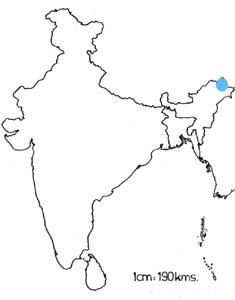

<head>
<meta http-equiv="Content-Type" content="text/html; charset=windows-1252">
<meta name="GENERATOR" content="Microsoft FrontPage 4.0">
<meta name="ProgId" content="FrontPage.Editor.Document">
<title>New Page 1</title>
<meta http-equiv="Content-Type" content="text/html; charset=windows-1252">
<meta name="GENERATOR" content="Microsoft FrontPage 4.0">
<meta name="ProgId" content="FrontPage.Editor.Document">
<title>ECONOMICALLY IMPORTANT PLANTS OF INDIA compiled by K</title>
<meta http-equiv="Content-Type" content="text/html; charset=windows-1252">
<meta name="GENERATOR" content="Microsoft FrontPage 4.0">
<meta name="ProgId" content="FrontPage.Editor.Document">
<title>ECONOMICALLY IMPORTANT PLANTS OF INDIA</title>
<meta http-equiv="Content-Type" content="text/html; charset=windows-1252">
<meta name="GENERATOR" content="Microsoft FrontPage 4.0">
<meta name="ProgId" content="FrontPage.Editor.Document">
<title>New Page 1</title>
<META HTTP-EQUIV="CONTENT-TYPE" CONTENT="text/html; charset=windows-1252">
<TITLE>Aegle marmelos </TITLE>
<META NAME="GENERATOR" CONTENT="Microsoft FrontPage 4.0">
<META NAME="CREATED" CONTENT="20010726;17265013">
<META NAME="CHANGEDBY" CONTENT="L.Sowmya">
<META NAME="CHANGED" CONTENT="20020726;13003551">
<META NAME="DESCRIPTION" CONTENT="Economically Important Plants">
<META NAME="KEYWORDS" CONTENT="Abies pindrow">
<META NAME="ProgId" CONTENT="FrontPage.Editor.Document">
<STYLE>
	<!--
		P { color: #2c9a97 }
	-->
	</STYLE>
<meta name="Microsoft Theme" content="none">
<link>
</head>

<body LANG="en-US" bgcolor="#CCCCCC" text="#009999">
<P><A NAME="begin"></A>
</P>
<table border="1" width="100%">
  <tr>
    <td width="100%" bgcolor="#1658BC">
      <P ALIGN=CENTER><b><font face="Verdana" size="6" color="#FFFFFF">Digitized
      Inventory of Animal Resources: Mammalia&nbsp;</font></b> <font color="#FFFFFF"><br>
      <b>
      Principal Investigator: Dr. R. J. B Alfred, Co-Investigator: Dr. Rama Krishna, Contributed by:
      Dr. M.S.Pradhan</b></font><br>
      </P>
    </td>
  </tr>
</table>
<p ALIGN="CENTER">&nbsp;</p>
<p ALIGN="CENTER"><a href="http://stp.unipune.ernet.in/zsi/photomap.html?code=140"><font face="Arial"><i style="mso-bidi-font-style:normal"><font color="#808000"><b style="mso-bidi-font-weight: normal; mso-ansi-font-size: 9.0pt; mso-bidi-font-size: 12.0pt; mso-fareast-font-family: Times New Roman; mso-bidi-font-family: Times New Roman; mso-ansi-language: EN-US; mso-fareast-language: EN-US; mso-bidi-language: AR-SA"><span style="mso-ansi-font-size: 9.0pt; mso-bidi-font-size: 12.0pt; mso-fareast-font-family: Times New Roman; mso-bidi-font-family: Times New Roman; mso-ansi-language: EN-US; mso-fareast-language: EN-US; mso-bidi-language: AR-SA; mso-bidi-font-weight: normal"><font size="6">Niviventer
brahma</font></span></b></font></i><b style="mso-bidi-font-weight: normal; mso-ansi-font-size: 9.0pt; mso-bidi-font-size: 12.0pt; mso-fareast-font-family: Times New Roman; mso-bidi-font-family: Times New Roman; mso-ansi-language: EN-US; mso-fareast-language: EN-US; mso-bidi-language: AR-SA"><font size="6" color="#808000"><span style="mso-bidi-font-size: 12.0pt; mso-fareast-font-family: Times New Roman; mso-bidi-font-family: Times New Roman; mso-ansi-language: EN-US; mso-fareast-language: EN-US; mso-bidi-language: AR-SA; mso-ansi-font-size: 9.0pt; mso-bidi-font-weight: normal">
(Thomas)</span></font></b></font></a></p>
<P ALIGN=center><b><font size="6" face="Comic Sans MS" color="#009999">&nbsp;&nbsp;</font><font size="6" face="Comic Sans MS" color="#800080">&nbsp;</font><font size="6" face="Comic Sans MS" color="#009999">&nbsp;&nbsp;&nbsp;&nbsp;&nbsp;&nbsp;&nbsp;&nbsp;&nbsp;&nbsp;&nbsp;&nbsp;&nbsp;&nbsp;</font></b></P>
<P ALIGN=LEFT><A HREF="#Taxonomic Details"><FONT FACE="Comic Sans MS">Taxonomic 
  Details</FONT> </A><FONT FACE="Comic Sans MS"><BR>
  ----- </FONT><A HREF="#Scientific Name"><FONT FACE="Comic Sans MS">Scientific Name</FONT></A><FONT FACE="Comic Sans MS"><BR>
  ----- </FONT><A HREF="#Classification"><FONT FACE="Comic Sans MS">Classification</FONT></A><FONT FACE="Comic Sans MS"><BR>
  ----- </FONT><A HREF="#Synonyms"><FONT FACE="Comic Sans MS">Synonyms</FONT></A><FONT FACE="Comic Sans MS"><BR>
  ----- </FONT><A HREF="#Common Names"><FONT FACE="Comic Sans MS">Common Names</FONT></A><FONT FACE="Comic Sans MS"><BR>
  </FONT><A HREF="#Other Biological Details"><FONT FACE="Comic Sans MS">Other 
  Biological Details</FONT></A><FONT FACE="Comic Sans MS"><BR>
  ----- </FONT><A HREF="#Habit and Habitat"><FONT FACE="Comic Sans MS">Habit and 
  Habitat</FONT></A><FONT FACE="Comic Sans MS"><BR>
  ----- </FONT><A HREF="#Distribution"><FONT FACE="Comic Sans MS">Distribution</FONT></A><FONT FACE="Comic Sans MS"><BR>
  ---------- </FONT><A HREF="#Extend of Occurance"><FONT FACE="Comic Sans MS">Extent of
Occurrence</FONT></A><FONT FACE="Comic Sans MS"><BR>
  ---------- </FONT><A HREF="#Area of occurance"><FONT FACE="Comic Sans MS">Area of
</FONT></A><A HREF="#Area of occurance"><font face="Comic Sans MS">occurrence</font></A><FONT FACE="Comic Sans MS"><BR>
  ---------- </FONT><A HREF="#Altitude:"><FONT FACE="Comic Sans MS">Altitude</FONT></A><FONT FACE="Comic Sans MS"><BR>
  ---------- </FONT><A HREF="#Population:"><FONT FACE="Comic Sans MS">Population</FONT></A><FONT FACE="Comic Sans MS"><BR>
  ----- </FONT>
  <A HREF="#Conservation Status:"><FONT FACE="Comic Sans MS">Conservation Status</FONT></A><FONT FACE="Comic Sans MS"><BR>
  ----- </FONT>
  <A HREF="#Diagnostic Features"><FONT FACE="Comic Sans MS">Diagnostic 
  Features</FONT></A><FONT FACE="Comic Sans MS"><BR>
  ----- </FONT>
<a HREF="#Breeding system"><FONT FACE="Comic Sans MS">Breeding system</FONT></a><FONT FACE="Comic Sans MS"><BR>
  </FONT><A HREF="#Miscellaneous Information"><FONT FACE="Comic Sans MS">Miscellaneous 
  Information</FONT></A><FONT FACE="Comic Sans MS"><BR>
  </FONT><A HREF="#Literature"><FONT FACE="Comic Sans MS">Literature</FONT></A></P>
<HR SIZE=3 COLOR="#0000ff">
<P><A NAME="Taxonomic Details"></A><FONT SIZE=6><FONT FACE="Monotype Corsiva"><FONT COLOR="#1658bc"><u>Taxonomic 
  Details</u></FONT></FONT></FONT> </P>
<HR SIZE=3 COLOR="#0000ff">
<P><A NAME="Scientific Name"></A><A NAME="Classification"></A><A NAME="Synonyms"></A><A NAME="Common Names"></A> 
  <FONT FACE="Comic Sans MS, sans-serif"><U>Scientific Name</U> :&nbsp;</FONT>&nbsp;&nbsp;&nbsp;&nbsp;<font face="Arial" size="5">&nbsp;&nbsp;&nbsp;&nbsp;<a href="http://stp.unipune.ernet.in/zsi/photomap.html?code=140"><i style="mso-bidi-font-style:normal"><font face="Abadi MT Condensed Light" size="6" color="#808000"><b style="mso-bidi-font-weight: normal; mso-ansi-font-size: 9.0pt; mso-bidi-font-size: 12.0pt; mso-fareast-font-family: Times New Roman; mso-bidi-font-family: Times New Roman; mso-ansi-language: EN-US; mso-fareast-language: EN-US; mso-bidi-language: AR-SA"><span style="mso-ansi-font-size: 9.0pt; mso-bidi-font-size: 12.0pt; mso-fareast-font-family: Times New Roman; mso-bidi-font-family: Times New Roman; mso-ansi-language: EN-US; mso-fareast-language: EN-US; mso-bidi-language: AR-SA; mso-bidi-font-weight: normal">Niviventer
brahma</span></b></font></i><b style="mso-bidi-font-weight: normal; mso-ansi-font-size: 9.0pt; mso-bidi-font-size: 12.0pt; mso-fareast-font-family: Times New Roman; mso-bidi-font-family: Times New Roman; mso-ansi-language: EN-US; mso-fareast-language: EN-US; mso-bidi-language: AR-SA"><font color="#808000"><span style="mso-bidi-font-size: 12.0pt; mso-fareast-font-family: Times New Roman; mso-bidi-font-family: Times New Roman; mso-ansi-language: EN-US; mso-fareast-language: EN-US; mso-bidi-language: AR-SA; mso-ansi-font-size: 9.0pt; mso-bidi-font-weight: normal">
(Thomas)</span></font></b></a></font></P>
<P>&nbsp;</P>
<P><font face="Comic Sans MS" size="3"><U>Classification</U><b><U>:</U></b></font></P>
<blockquote>
  <blockquote>
    <blockquote>
      <blockquote>
        <blockquote>
          <blockquote>
<P><span style="mso-bidi-font-size: 12.0pt; color: black"><font face="Arial" size="4">Order:</font><i style="mso-bidi-font-style:normal"><font face="Arial" size="4">Rodentia</font></i></span></P>
<P><span style="mso-bidi-font-size: 12.0pt; color: black"><font face="Arial" size="4">Suborder:</font><i style="mso-bidi-font-style:normal"><font face="Arial" size="4">Sciurognathi</font></i></span></P>
<P><font face="Arial" size="4"><span style="mso-bidi-font-size: 12.0pt; color: black">Family:<i style="mso-bidi-font-style:normal">Muridae</i><o:p>
</o:p>
</span></font></P>
            <span style="mso-bidi-font-size: 12.0pt; mso-fareast-font-family: Times New Roman; mso-bidi-font-family: Times New Roman; color: black; mso-ansi-language: EN-US; mso-fareast-language: EN-US; mso-bidi-language: AR-SA"><font face="Arial" size="4">Subfamily:</font><i style="mso-bidi-font-style:normal"><font face="Arial" size="4">Murinae</font></i></span>
          </blockquote>
        </blockquote>
      </blockquote>
    </blockquote>
  </blockquote>
</blockquote>
<P><font face="Comic Sans MS, sans-serif" size="3"><BR>
  <U>Synonyms</U>:&nbsp;&nbsp;&nbsp;&nbsp;&nbsp;&nbsp;&nbsp;&nbsp;&nbsp;&nbsp;&nbsp;&nbsp;&nbsp;&nbsp;&nbsp;&nbsp;&nbsp;&nbsp;&nbsp;&nbsp;</font><font size="4" face="Arial"><span style="mso-bidi-font-size: 12.0pt; mso-fareast-font-family: Times New Roman; mso-bidi-font-family: Times New Roman; color: black; mso-ansi-language: EN-US; mso-fareast-language: EN-US; mso-bidi-language: AR-SA; mso-bidi-font-style: normal"><i style="mso-bidi-font-style: normal; mso-bidi-font-size: 12.0pt; mso-fareast-font-family: Times New Roman; mso-bidi-font-family: Times New Roman; color: black; mso-ansi-language: EN-US; mso-fareast-language: EN-US; mso-bidi-language: AR-SA">&nbsp;&nbsp;&nbsp;</i></span></font><font face="Comic Sans MS, sans-serif" size="3">&nbsp;&nbsp;&nbsp;&nbsp;</font><i style="mso-bidi-font-style:
normal"><font face="Arial" size="3"><span style="mso-bidi-font-size: 12.0pt; color: black">Epimys
bratima, Thomas</span>
</font></i><span style="mso-bidi-font-size: 12.0pt; color: black"><font face="Arial" size="3">
<span style="mso-bidi-font-size: 12.0pt; mso-fareast-font-family: Arial Unicode MS; color: black"><o:p>
</span>
</font></span><font face="Comic Sans MS, sans-serif" size="3"><span style="font-size:9.0pt;mso-bidi-font-size:12.0pt;font-family:Verdana;
mso-fareast-font-family:&quot;Arial Unicode MS&quot;;color:black">
</o:p>
</span>
</font></P>
<P><font face="Comic Sans MS, sans-serif" size="3"><BR>
  <U>Common Names</U><SPAN STYLE="text-decoration: none">:&nbsp;&nbsp;&nbsp;&nbsp;&nbsp;&nbsp;&nbsp;&nbsp;&nbsp;&nbsp;&nbsp;&nbsp;&nbsp;</SPAN></font>&nbsp;&nbsp;&nbsp;<span style="text-decoration: none"><font face="Comic Sans MS, sans-serif" size="3">&nbsp;&nbsp;</font><font face="Arial" size="3">&nbsp;</font></span><font face="Arial" size="3"><span style="font-size:9.0pt;
mso-bidi-font-size:12.0pt;font-family:Verdana;color:black">Thomas's Cherount Rat<i style="font-size: 10.0pt; mso-bidi-font-size: 12.0pt; color: black">&nbsp;&nbsp;&nbsp;&nbsp;
</i><i style="mso-bidi-font-style:
normal">Regional Names:</i>&nbsp;Not Available</span><span style="mso-bidi-font-size: 12.0pt; mso-fareast-font-family: Arial Unicode MS; color: black"><o:p>
</span>
</font><span style="font-size:9.0pt;mso-bidi-font-size:12.0pt;font-family:Verdana;
mso-fareast-font-family:&quot;Arial Unicode MS&quot;;color:black">
</o:p>
</span>
</P>
<P><font face="Comic Sans MS, sans-serif" size="3"><span style="text-decoration: none">&nbsp;&nbsp;</span></font><font size="4"><span style="mso-bidi-font-size: 12.0pt; font-family: Verdana; mso-fareast-font-family: Arial Unicode MS; color: black"></o:p>
</span></font>
</P>
<P ALIGN=RIGHT><A HREF="#begin"><U><FONT FACE="Comic Sans MS">Back to
Top</FONT></U></A></P>
<HR SIZE=3 COLOR="#0000ff">
<P><A NAME="Other Biological Details"></A><u><font face="Monotype Corsiva" color="#1658bc" size="6">Other 
  Biological Details&nbsp;&nbsp;</font></u> 
</P>
<p class="MsoNormal" style="text-align:justify"><i style="mso-bidi-font-style:
normal"><span style="mso-bidi-font-size: 12.0pt"><font face="Arial" size="3" color="#FF0000"><b>Threats:&nbsp;</b></font></span></i><font face="Arial" size="3" color="#000000"><span style="mso-bidi-font-size: 12.0pt">
Agricultural and
Farming and Catastrophic events;&nbsp;<i style="mso-bidi-font-style:normal">Effect
of threats on population (Perceived or inferred)</i>:&nbsp;Declining&nbsp;<o:p>
</o:p>
</span></font></p>
<p class="MsoNormal" style="text-align:justify"><b><i style="mso-bidi-font-style:
normal"><span style="mso-bidi-font-size: 12.0pt"><font face="Arial" size="3" color="#FF0000">Trade:&nbsp;</font></span></i></b><span style="mso-bidi-font-size: 12.0pt"><font face="Arial" size="3" color="#FF0000"><b>
</b></font><font face="Arial" size="3" color="#000000"> Not Known;&nbsp;<i style="mso-bidi-font-style:normal">Parts
in trade</i>:&nbsp;Not Known;&nbsp;<i style="mso-bidi-font-style:normal">Effect
of trade on population (Perceived or inferred)</i>:&nbsp;Not declining<span style="mso-bidi-font-size: 12.0pt; mso-fareast-font-family: Arial Unicode MS"><o:p>
</o:p>
</span></font></span></p>
<P>&nbsp; 
</P>
<HR SIZE=3 COLOR="#0000ff">
<P STYLE="margin-bottom: 0cm"><A NAME="Habit and Habitat"></A><U><FONT FACE="Comic Sans MS">HABIT 
  &amp; HABITAT</FONT></U><font color="#000000" size="4"><span style="font-family: Times New Roman; mso-fareast-font-family: Times New Roman; mso-ansi-language: EN-US; mso-fareast-language: EN-US; mso-bidi-language: AR-SA">&nbsp;&nbsp;&nbsp;&nbsp;&nbsp;&nbsp;&nbsp;&nbsp;&nbsp;&nbsp;&nbsp;&nbsp;&nbsp;&nbsp;&nbsp;&nbsp;&nbsp;&nbsp;&nbsp;&nbsp;&nbsp;&nbsp;&nbsp;
</span></font></P>
<p class="MsoNormal" style="text-align:justify"><font size="3" face="Arial"><span style="mso-bidi-font-size: 12.0pt; color: black">Cool, moist space in
between rocks and below leaf litter. Round shaped nests are made with bamboo
leaves at the base of bamboo thickets.<span style="font-size:9.0pt;
mso-bidi-font-size:12.0pt;font-family:Verdana;mso-fareast-font-family:&quot;Arial Unicode MS&quot;;
color:black"><o:p>
</o:p>
</span></span></font></p>
<p class="MsoNormal"><font size="3" face="Arial"><b><span style="mso-bidi-font-size: 12.0pt"><font color="#008000">&nbsp;<i style="mso-bidi-font-style:
normal">Habitat Structure:</i>&nbsp;</font></span></b><span style="mso-bidi-font-size: 12.0pt; color: black">Dense highland
temperate forests. Change in Habitat structure: Not Known.<span style="font-size:9.0pt;mso-bidi-font-size:12.0pt;font-family:Verdana;
mso-fareast-font-family:&quot;Arial Unicode MS&quot;;color:black"><o:p>
</o:p>
</span></span></font></p>
<p class="MsoNormal" style="text-align:justify">&nbsp;</p>
<p align=RIGHT style="margin-bottom: 0cm"><font face="Comic Sans MS" size="3"><a href="#begin">Back 
  to Top</a></font></p>
<P STYLE="margin-bottom: 0cm">&nbsp;</P>
<P><font size="3"><A NAME="Distribution"></A><A NAME="Extend of Occurance"></A><A NAME="Area of occurance:"></A><A NAME="Altitude:"></A><A NAME="Population:"></a><A NAME="Conservation status:"></A> 
  <FONT FACE="Comic Sans MS"><U>Distribution</U>:&nbsp;&nbsp;&nbsp;&nbsp;&nbsp;&nbsp;&nbsp;&nbsp;&nbsp;</FONT></font></P>
<p class="MsoNormal"><span style="font-size:10.0pt;mso-bidi-font-size:12.0pt;
color:black">&nbsp;<o:p>&nbsp;</span><span style="mso-bidi-font-size: 12.0pt; color: black"><font face="Arial" size="3">&nbsp;&nbsp;&nbsp;</font><span style="font-size: 10.0pt">&nbsp;&nbsp;&nbsp;&nbsp;&nbsp;&nbsp;&nbsp;&nbsp;&nbsp;&nbsp;&nbsp;&nbsp;&nbsp;&nbsp;&nbsp;&nbsp;&nbsp;&nbsp;&nbsp;&nbsp;&nbsp;&nbsp;&nbsp;&nbsp;&nbsp;&nbsp;&nbsp;&nbsp;&nbsp;&nbsp;&nbsp;&nbsp;&nbsp;&nbsp;&nbsp;&nbsp;&nbsp;&nbsp;&nbsp;&nbsp;&nbsp;&nbsp;&nbsp;&nbsp;
</span><font face="Arial" size="3">Mishimi Hills in
 Arunachal Pradesh in India and further east</font></span>
</p>
<p class="MsoNormal"><font face="Arial" size="3"><b><span style="mso-bidi-font-size: 12.0pt; mso-fareast-font-family: Times New Roman; mso-bidi-font-family: Times New Roman; mso-ansi-language: EN-US; mso-fareast-language: EN-US; mso-bidi-language: AR-SA"><font color="#008000"><i style="mso-bidi-font-style:normal">No.</i><i style="mso-bidi-font-style: normal; mso-bidi-font-size: 12.0pt; mso-fareast-font-family: Times New Roman; mso-bidi-font-family: Times New Roman; mso-ansi-language: EN-US; mso-fareast-language: EN-US; mso-bidi-language: AR-SA">
</i><i style="mso-bidi-font-style:normal">of Locations:&nbsp;</i></font></span></b><span style="font-size:9.0pt;
mso-bidi-font-size:12.0pt;font-family:Verdana;mso-fareast-font-family:&quot;Times New Roman&quot;;
mso-bidi-font-family:&quot;Times New Roman&quot;;color:black;mso-ansi-language:EN-US;
mso-fareast-language:EN-US;mso-bidi-language:AR-SA"><span style="mso-bidi-font-size: 12.0pt; color: black">&nbsp;&nbsp;&nbsp;</span></span><span style="mso-bidi-font-size: 12.0pt; mso-fareast-font-family: Times New Roman; mso-bidi-font-family: Times New Roman; mso-ansi-language: EN-US; mso-fareast-language: EN-US; mso-bidi-language: AR-SA; mso-bidi-font-style: normal"><font color="#008000"><b>
</b></font></span><span style="mso-bidi-font-size: 12.0pt; color: black"><span style="font-size:9.0pt;
mso-bidi-font-size:12.0pt;font-family:Verdana;mso-fareast-font-family:&quot;Times New Roman&quot;;
mso-bidi-font-family:&quot;Times New Roman&quot;;color:black;mso-ansi-language:EN-US;
mso-fareast-language:EN-US;mso-bidi-language:AR-SA">At least 4 in India, Two in
Myanmar;&nbsp;<i style="mso-bidi-font-style:normal">Type:&nbsp;</i>Isolated</span><span style="mso-bidi-font-size: 12.0pt; mso-fareast-font-family: Arial Unicode MS; color: black"><o:p>
</o:p>
</span></span></font><span style="font-size:10.0pt;mso-bidi-font-size:12.0pt;
color:black"></o:p>
</span></p>
<p class="MsoNormal"><span style="font-size:10.0pt;mso-bidi-font-size:12.0pt;
color:black">&nbsp;<o:p>
</o:p>
</span></p>
<P><font face="Comic Sans MS" size="3"><U>Extent of </U><u>Occurrence&nbsp;</u><font color="#000000">&nbsp;</font></font><font face="Comic Sans MS" size="4" color="#000000">&nbsp;&nbsp;&nbsp;&nbsp;&nbsp;&nbsp;&nbsp;</font><font size="3" face="Arial"><span style="mso-bidi-font-size: 12.0pt; color: black">2001-5000
sq.kms.</span></font><font face="Comic Sans MS" size="3"><BR>
  </font><font size="3"><BR>
  </font></P>
<P STYLE="margin-bottom: 0cm"><U><font face="Comic Sans MS" size="3">Area of occurrence:</font></U><font face="Comic Sans MS" size="4" color="#000000">&nbsp;&nbsp;&nbsp;&nbsp;&nbsp;&nbsp;&nbsp;&nbsp;&nbsp;&nbsp;&nbsp;</font><font face="Arial" size="3" color="#000000">&nbsp;<span style="font-size:9.0pt;
mso-bidi-font-size:12.0pt;font-family:Verdana;color:black">101-500 sq.kms.</span><span style="font-size:9.0pt;mso-bidi-font-size:12.0pt;font-family:Verdana;
mso-fareast-font-family:&quot;Arial Unicode MS&quot;;color:black"><o:p>
</o:p>
</span>&nbsp;&nbsp;&nbsp;</font><font face="Comic Sans MS" size="4" color="#000000">&nbsp;&nbsp;&nbsp;&nbsp;&nbsp;</font></P>
<P STYLE="margin-bottom: 0cm"><font face="Comic Sans MS" size="3"><U>Altitude:</U></font><font face="Arial" size="4">&nbsp;&nbsp;&nbsp;&nbsp;&nbsp;<span style="mso-bidi-font-size: 12.0pt; color: black">&nbsp;&nbsp;&nbsp;&nbsp;&nbsp;&nbsp;&nbsp;&nbsp;&nbsp;&nbsp;&nbsp;&nbsp;&nbsp;&nbsp;&nbsp;&nbsp;&nbsp;&nbsp;&nbsp;&nbsp;&nbsp;&nbsp;&nbsp;&nbsp;</span></font><span style="mso-bidi-font-size: 12.0pt; color: black"><font face="Arial" size="3">
<span style="font-size:9.0pt;
mso-bidi-font-size:12.0pt;font-family:Verdana;color:black">1815-2623 m</span><span style="font-size:9.0pt;mso-bidi-font-size:12.0pt;font-family:Verdana;
mso-fareast-font-family:&quot;Arial Unicode MS&quot;;color:black"><o:p>
</o:p>
</span></font></span><font face="Comic Sans MS" size="3"><BR>
  <BR>
  <U>Population:</U></font><font color="#000000" face="Comic Sans MS" size="4">&nbsp;&nbsp;&nbsp;&nbsp;&nbsp;&nbsp;&nbsp;&nbsp;&nbsp;&nbsp;&nbsp;</font></P>
<p class="MsoNormal" style="text-align:justify"><font face="Arial" size="3"><i style="mso-bidi-font-style:
normal"><span style="mso-bidi-font-size: 12.0pt"><font color="#008000"><b>Global Population:</b></font></span><span style="mso-bidi-font-size: 12.0pt; color: black">&nbsp;</span></i><span style="font-size:
9.0pt;mso-bidi-font-size:12.0pt;font-family:Verdana;color:black">Not Known;&nbsp;<i style="mso-bidi-font-style:normal">No.</i><i style="mso-bidi-font-style: normal; mso-bidi-font-size: 12.0pt; color: black">
</i><i style="mso-bidi-font-style:normal">of
mature individuals in all the populations:&nbsp;</i>Not known<o:p>
</o:p>
</span></font></p>
<p class="MsoNormal" style="text-align:justify"><font face="Arial" size="3"><i style="mso-bidi-font-style:
normal"><b><span style="mso-bidi-font-size: 12.0pt"><font color="#008000">Captive Population:</font></span></b><span style="mso-bidi-font-size: 12.0pt; color: black">&nbsp;</span></i><span style="font-size:9.0pt;mso-bidi-font-size:12.0pt;font-family:Verdana;
color:black">Not Known &nbsp;<o:p>
</o:p>
 </span></font></p>
<p class="MsoNormal" style="text-align:justify"><font face="Arial" size="3"><i style="mso-bidi-font-style:
normal"><span style="mso-bidi-font-size: 12.0pt"><font color="#008000"><b>Life span:&nbsp;</b></font></span></i><span style="font-size:9.0pt;
mso-bidi-font-size:12.0pt;font-family:Verdana;color:black"> (Wild):&nbsp;Not
Known ;&nbsp;(Captivity):&nbsp;Not Known &nbsp;<o:p>
</o:p>
 </span></font></p>
<p class="MsoNormal" style="text-align:justify"><font face="Arial" size="3"><i style="mso-bidi-font-style:
normal"><span style="mso-bidi-font-size: 12.0pt"><font color="#008000"><b>Population Trend:</b></font></span><span style="mso-bidi-font-size: 12.0pt; color: black">&nbsp;</span></i><span style="font-size:
9.0pt;mso-bidi-font-size:12.0pt;font-family:Verdana;color:black">Unknown</span><font color="#000000" face="Comic Sans MS" size="4">&nbsp;&nbsp;&nbsp;&nbsp;&nbsp;&nbsp;&nbsp;&nbsp;&nbsp;&nbsp;&nbsp;&nbsp;&nbsp;&nbsp;&nbsp;&nbsp;&nbsp;&nbsp;&nbsp;&nbsp;&nbsp;&nbsp;&nbsp;&nbsp;&nbsp;&nbsp;</font></font></p>
<P STYLE="margin-bottom: 0cm"><font face="Comic Sans MS" size="3"><U>Conservation status:</U>&nbsp;&nbsp;&nbsp;&nbsp;&nbsp;&nbsp;&nbsp;&nbsp;&nbsp;&nbsp;&nbsp;&nbsp;&nbsp;&nbsp;&nbsp;&nbsp;&nbsp;&nbsp;
</font><font color="#FF0000" face="Arial" size="5"><span style="mso-bidi-font-size: 12.0pt; mso-fareast-font-family: Times New Roman; mso-bidi-font-family: Times New Roman; mso-ansi-language: EN-US; mso-fareast-language: EN-US; mso-bidi-language: AR-SA">Non-Endemic species&nbsp;&nbsp;
</span>Endangered</font><P STYLE="margin-bottom: 0cm"><font size="3" face="Arial"><i style="mso-bidi-font-style:normal"><span style="mso-bidi-font-size: 12.0pt; mso-fareast-font-family: Times New Roman; mso-bidi-font-family: Times New Roman; color: black; mso-ansi-language: EN-US; mso-fareast-language: EN-US; mso-bidi-language: AR-SA">CITES APPENDIX:</span></i><span style="mso-bidi-font-size: 12.0pt; mso-fareast-font-family: Times New Roman; mso-bidi-font-family: Times New Roman; color: black; mso-ansi-language: EN-US; mso-fareast-language: EN-US; mso-bidi-language: AR-SA">&nbsp;Not Listed;&nbsp;<i style="mso-bidi-font-style:normal">Indian
Wildlife (Protection) Act (1972) (As </i><i style="mso-bidi-font-style: normal; mso-bidi-font-size: 12.0pt; mso-fareast-font-family: Times New Roman; mso-bidi-font-family: Times New Roman; color: black; mso-ansi-language: EN-US; mso-fareast-language: EN-US; mso-bidi-language: AR-SA">amended</i><i style="mso-bidi-font-style:normal">
up</i><i style="mso-bidi-font-style: normal; mso-bidi-font-size: 12.0pt; mso-fareast-font-family: Times New Roman; mso-bidi-font-family: Times New Roman; color: black; mso-ansi-language: EN-US; mso-fareast-language: EN-US; mso-bidi-language: AR-SA">
</i><i style="mso-bidi-font-style:normal">to 2002):</i>&nbsp;Schedule V;&nbsp;Part
;&nbsp;<i style="mso-bidi-font-style:
normal">Indian Red Data Book (IUCN, 1994):</i>&nbsp;Not Listed;&nbsp;<i style="mso-bidi-font-style:normal">IUCN
(1998)</i> (Proposed):&nbsp;Endangered (National) and Data Deficient (Global);&nbsp;</span></font><P STYLE="margin-bottom: 0cm">&nbsp;<P STYLE="margin-bottom: 0cm"><font face="Comic Sans MS" size="3">&nbsp;&nbsp;&nbsp;&nbsp;&nbsp;&nbsp;&nbsp;&nbsp;&nbsp;&nbsp;&nbsp;&nbsp;&nbsp;&nbsp;
  <P STYLE="margin-bottom: 0cm"><font face="Comic Sans MS" size="3"><A NAME="Diagnostic Features"></A><A NAME="Breeding system"></A><U>DIAGNOSTIC 
  FEATURES</U>:</font></P>

</font>

<p class="MsoNormal" style="text-align:justify"><font face="Arial" size="3"><span style="mso-bidi-font-size: 12.0pt; color: black">A medium sized rat
with tail longer than head and body (150-160 %) sometimes tufted at the tip.
Pelage dense with long guard hairs. Thomas Chestnut rat is essentially like
Niviventer fulvescens in size and appearance but differs from it in having soft
long and dense haired pelage. Dorsum orange brown and venter grayish ( Basal
half grey, while apical half white). Tail hairy and poorly bicoloured ( Dark
above ). Maxillary tooth row long. Mammae three pairs. Palate short, less than
half of occipitonasal length. Bulla small, less than 15% of occipitonasal
length. Anterior palalal formina long and narrow. Temporal ridges prominent.<o:p>
</o:p>
</span></font>
</p>
<p class="MsoNormal" style="text-align:justify"><font face="Arial" size="3"><b><i style="mso-bidi-font-style:
normal"><span style="mso-bidi-font-size: 12.0pt"><font color="#008000">Measurements:</font></span></i><span style="mso-bidi-font-size: 12.0pt"><font color="#008000">&nbsp;</font></span></b><span style="mso-bidi-font-size: 12.0pt; color: black">(In mm): Haed
and Body Length: 140-155; Tail Length: 215-240; Hind foot: 21-32; Ear: 24-25;
Occipitonasal Length: 35-38; Palate: 17.5- 18.5; Apical palatal foramina:
6.5-7.3; maxillary teeth row: 6.3-6.8. <span style="mso-bidi-font-size: 12.0pt; mso-fareast-font-family: Arial Unicode MS; color: black"><o:p>
</o:p>
</span></span></font></p>
<p class="MsoNormal"><font face="Arial" size="3"><span style="mso-bidi-font-size: 12.0pt; color: black">&nbsp;<o:p>
</span><i style="mso-bidi-font-style:
normal"><b><span style="mso-bidi-font-size: 12.0pt"><font color="#008000">Weight:</font></span></b></i><span style="mso-bidi-font-size: 12.0pt; color: black">&nbsp;Not Known<span style="mso-bidi-font-size: 12.0pt; mso-fareast-font-family: Arial Unicode MS; color: black"><o:p>
</o:p>
</span></span></font>
</p>
<P ALIGN=RIGHT><A HREF="#begin"><FONT FACE="Comic Sans MS">Back to
Top</FONT></A><FONT FACE="Comic Sans MS"> </FONT>
</P>
<HR SIZE=3 COLOR="#0000ff">
<P><A NAME="Miscellaneous Information2"></A><A NAME="Miscellaneous Information1"></A>
 <FONT SIZE=6><FONT FACE="Monotype Corsiva"><FONT COLOR="#1658bc">
<U>Miscellaneous
Information</U>&nbsp;&nbsp;&nbsp;</FONT></FONT></FONT>
</P>
<P><font face="Arial" size="3"><i style="mso-bidi-font-style:normal"><span style="mso-bidi-font-size: 12.0pt; mso-fareast-font-family: Times New Roman; mso-bidi-font-family: Times New Roman; mso-ansi-language: EN-US; mso-fareast-language: EN-US; mso-bidi-language: AR-SA"><font color="#008000"><b>Intraspecific variations:</b></font></span></i><span style="font-size:9.0pt;
mso-bidi-font-size:12.0pt;font-family:Verdana;mso-fareast-font-family:&quot;Times New Roman&quot;;
mso-bidi-font-family:&quot;Times New Roman&quot;;color:black;mso-ansi-language:EN-US;
mso-fareast-language:EN-US;mso-bidi-language:AR-SA">&nbsp;No Subspecies Ellerman
(1961) treated <i> Epimys brahma</i> as a subspecies of <i> Rattus fulvescens</i> but Musser
(1970) considered it as a full species.</span>
</font>
</P>
<p class="MsoNormal" style="text-align:justify"><font face="Arial" size="3"><i style="mso-bidi-font-style:
normal"><b><span style="mso-bidi-font-size: 12.0pt"><font color="#008000">Museum Records:&nbsp;</font></span></b></i><span style="font-size:
9.0pt;mso-bidi-font-size:12.0pt;font-family:Verdana;color:black"> <i style="mso-bidi-font-style:normal">Locality:</i>&nbsp;Anzong
Valley in India;&nbsp;<i style="mso-bidi-font-style:normal">Name of Museum:</i>&nbsp;British
Museum (Natural History), London.</span><span style="font-size:9.0pt;
mso-bidi-font-size:12.0pt;font-family:Verdana;mso-fareast-font-family:&quot;Arial Unicode MS&quot;;
color:black">&nbsp;</span><span style="font-size:10.0pt;mso-bidi-font-size:12.0pt;
color:black">&nbsp;<o:p>
</o:p>
</span></font></p>
<p class="MsoNormal" style="text-align:justify"><font face="Arial" size="3"><i style="mso-bidi-font-style:
normal"><b><span style="mso-bidi-font-size: 12.0pt"><font color="#008000">Project Specific Records:</font></span></b><span style="mso-bidi-font-size: 12.0pt; color: black">&nbsp;</span></i><span style="font-size:9.0pt;mso-bidi-font-size:12.0pt;font-family:Verdana;
color:black"> Mayodi in Mehao Wildlife Sanctuary, Dibang Valley, Aruchal Pradesh;&nbsp;Feb.
1988;&nbsp;2;&nbsp;Night;&nbsp;&nbsp;<o:p>
</o:p>
</span></font></p>
<font face="Arial" size="3">
<i style="mso-bidi-font-style:normal"><b><span style="mso-bidi-font-size: 12.0pt; mso-fareast-font-family: Times New Roman; mso-bidi-font-family: Times New Roman; mso-ansi-language: EN-US; mso-fareast-language: EN-US; mso-bidi-language: AR-SA"><font color="#008000">Sighting Records:&nbsp;</font></span></b></i><span style="font-size:9.0pt;mso-bidi-font-size:12.0pt;font-family:Verdana;
mso-fareast-font-family:&quot;Times New Roman&quot;;mso-bidi-font-family:&quot;Times New Roman&quot;;
color:black;mso-ansi-language:EN-US;mso-fareast-language:EN-US;mso-bidi-language:
AR-SA"> <i style="mso-bidi-font-style:normal">Type of Sighting:</i>&nbsp;Direct;&nbsp;<i style="mso-bidi-font-style:normal">Field
Notes:</i>&nbsp;Seen in bamboo thickets near a rocky bed. Though small in size
can be seen easily, due to their bright reddish colouration in search light at
night.&nbsp;</span>
</font>
<P><font face="Arial" size="3"><i style="mso-bidi-font-style:normal"><b><span style="mso-bidi-font-size: 12.0pt; mso-fareast-font-family: Times New Roman; mso-bidi-font-family: Times New Roman; mso-ansi-language: EN-US; mso-fareast-language: EN-US; mso-bidi-language: AR-SA"><font color="#008000">Taxon related studies recommended:&nbsp;</font></span></b></i><span style="font-size:9.0pt;mso-bidi-font-size:12.0pt;font-family:Verdana;
mso-fareast-font-family:&quot;Times New Roman&quot;;mso-bidi-font-family:&quot;Times New Roman&quot;;
color:black;mso-ansi-language:EN-US;mso-fareast-language:EN-US;mso-bidi-language:
AR-SA">Survey, Monitoring and Taxonomic studies</span>
</font>
</P>
<P>&nbsp;
</P>
<HR SIZE=3 COLOR="#0000ff">
<P><font face="Comic Sans MS"><span style="font-size:9.0pt;mso-bidi-font-size:12.0pt;
font-family:Verdana;mso-fareast-font-family:&quot;Times New Roman&quot;;mso-bidi-font-family:
&quot;Times New Roman&quot;;color:black;mso-ansi-language:EN-US;mso-fareast-language:
EN-US;mso-bidi-language:AR-SA"><!--[if gte vml 1]><v:shapetype id="_x0000_t75"
 coordsize="21600,21600" o:spt="75" o:preferrelative="t" path="m@4@5l@4@11@9@11@9@5xe"
 filled="f" stroked="f">
 <v:stroke joinstyle="miter"/>
 <v:formulas>
  <v:f eqn="if lineDrawn pixelLineWidth 0"/>
  <v:f eqn="sum @0 1 0"/>
  <v:f eqn="sum 0 0 @1"/>
  <v:f eqn="prod @2 1 2"/>
  <v:f eqn="prod @3 21600 pixelWidth"/>
  <v:f eqn="prod @3 21600 pixelHeight"/>
  <v:f eqn="sum @0 0 1"/>
  <v:f eqn="prod @6 1 2"/>
  <v:f eqn="prod @7 21600 pixelWidth"/>
  <v:f eqn="sum @8 21600 0"/>
  <v:f eqn="prod @7 21600 pixelHeight"/>
  <v:f eqn="sum @10 21600 0"/>
 </v:formulas>
 <v:path o:extrusionok="f" gradientshapeok="t" o:connecttype="rect"/>
 <o:lock v:ext="edit" aspectratio="t"/>
</v:shapetype><v:shape id="_x0000_i1025" type="#_x0000_t75" alt="Map" style='width:176.25pt;
 height:225pt' fillcolor="window">
 <v:imagedata src="Mammal110.jpg"
  o:href="http://stp.unipune.ernet.in/zsi/images/maps/map140.jpg"/>
</v:shape><![endif]-->
</span>&nbsp;<br>
  </font></P>
<P><font size="3"><BR>
  </font><BR>
</P>
<P ALIGN=RIGHT><A HREF="#begin"><U><FONT FACE="Comic Sans MS">Back to
Top</FONT></U></A></P>
<HR SIZE=3 COLOR="#0000ff">
<P><A NAME="Literature"></A><U><FONT SIZE=6><FONT FACE="Monotype Corsiva"><FONT COLOR="#1658bc">Literature</FONT></FONT></FONT></U>
</P>
<P><font face="Arial" size="3" color="#000000"><span style="mso-bidi-font-size: 12.0pt">Agrawal,
V. C.&nbsp;2000&nbsp;Taxonomic studies of Indian Muridae and Hystricidae (Mammalia:
Rodentia)&nbsp;<i style="mso-bidi-font-style:normal">Rec. Zool. surv. India Occ.
Paper No.</i>&nbsp;<b style="mso-bidi-font-weight:normal">180</b>:&nbsp;177pp.&nbsp;<br>
<span style="mso-spacerun: yes">&nbsp;</span>Chakraborty, S. and Sen, A.K.&nbsp;1990&nbsp;Mammals
of Mehua Wildlife Sanctuary (Dibang Valley Dist., Arunachal Pradesh) with
remarks on their status&nbsp;<i style="mso-bidi-font-style:
normal">Rec. Zool. surv. India</i>&nbsp;<b style="mso-bidi-font-weight:normal">88</b>:&nbsp;263-285&nbsp;<br>
Ellerman, J. R. &nbsp;1961&nbsp;<i style="mso-bidi-font-style:normal"> The Fauna
of British India including Pakistan Burma and Celyon: Rodentia</i>&nbsp;Publisher:&nbsp;Zoological
Surveyof India, Kolkata&nbsp;<br>
Molur, S.; Nameer, P. O. and Walker, S.&nbsp;1998&nbsp;<i style="mso-bidi-font-style:
normal">Report of the workshop &quot; Conservation Assessment and Management
Plan for Mammals of India &quot;</i>&nbsp;176pp.&nbsp;Publisher:&nbsp;ZooOutreach
Organisation, Conservation Breeding Specialist Group, India, Coimbatore, India.&nbsp;<br>
Musser, G. G.&nbsp;1970&nbsp;Species limits of Rattus bramha, a murid rodent of
northeast India and Burma&nbsp;<i style="mso-bidi-font-style:normal">Amer. Mus.
Novit</i>&nbsp;<b style="mso-bidi-font-weight:normal">2406</b>:&nbsp;27pp.<o:p>
</o:p>
</span>
</font>
</P>
<HR SIZE=3 COLOR="#0000ff">
<P><font face="Comic Sans MS"><br>
  </font><font size="2" color="#009999"><b><font face="Comic Sans MS"></font></b></font></P>
<p align="right"><font size="3" color="#009999"><b><font face="Comic Sans MS"></font></b></font></p>
<div align="right"><font color="#009999"><b><font face="Comic Sans MS" size="2"></font></b></font></div>
<P><BR>
  <BR>
</P>
<P ALIGN=RIGHT><A HREF="#begin"><U><font face="Comic Sans MS">Back to Top</font></U></A></P>

</body>

<!DOCTYPE HTML PUBLIC "-//W3C//DTD HTML 3.2//EN">
